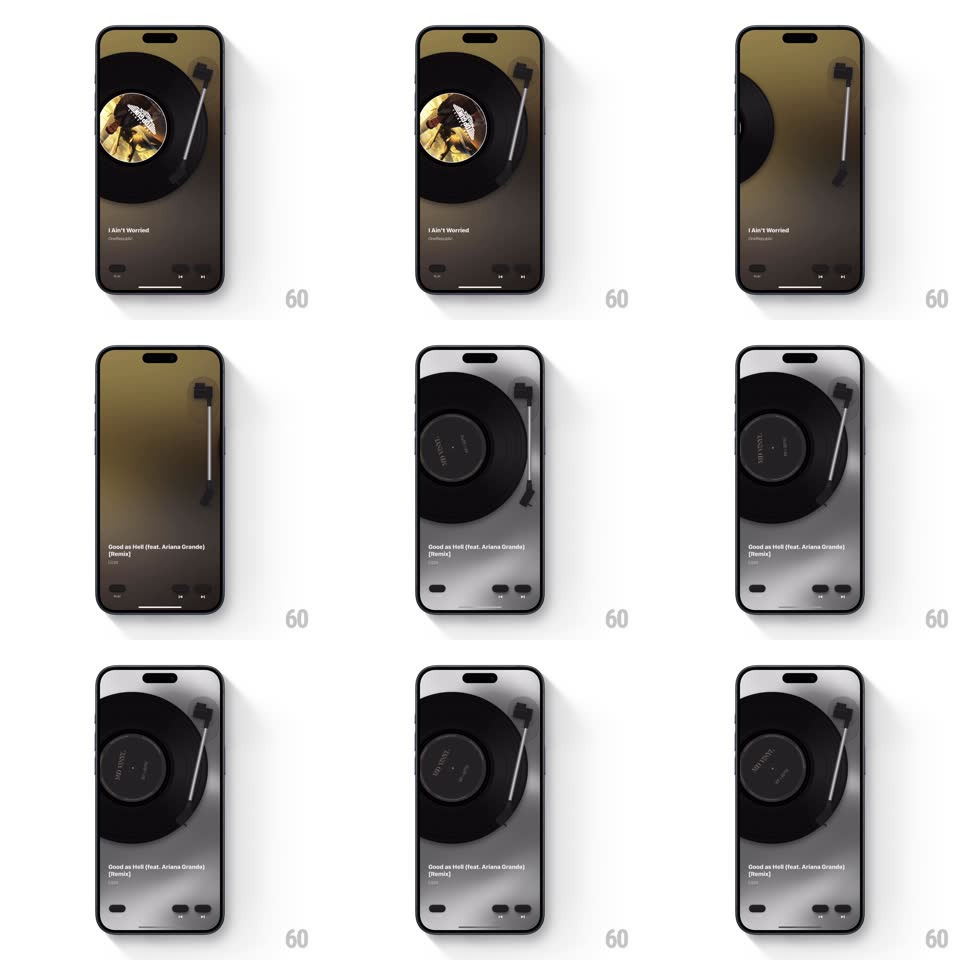

Media
Frame-by-frame

Rebuild this interaction 1:1: MD Vinyl's next-song transition - skipping forward lifts the tonearm off the record, the current vinyl slides away as the new record (different label art, different platter tint) slides in from the side, and the tonearm swings back down onto the fresh disc as it spins up and the warm background tint shifts to match.

Rebuild this interaction 1:1: MD Vinyl's next-song transition - skipping forward lifts the tonearm off the record, the current vinyl slides away as the new record (different label art, different platter tint) slides in from the side, and the tonearm swings back down onto the fresh disc as it spins up and the warm background tint shifts to match. ## Integration Integration: stack-agnostic spec - springs given as stiffness/damping, timed motions as duration + curve; map every value to your framework and animation library of choice. ## Scene Skeuomorphic player: vinyl record on a platter filling the upper screen, tonearm top-right, track title and artist bottom-left, transport buttons bottom-right. The whole background is tinted by the album art's dominant color (warm olive for the current track). ## Motion spec Pattern: record-change transition. - Tap next: the tonearm lifts (rotate -12deg off the disc, 300ms, ease-out) and parks; the record's spin decelerates (angular velocity to 0 over 500ms). - The old record slides left and off the platter (translateX with a slight downward arc, spring ~300/24, 450ms) while the new record slides in from the right on the mirrored path, its own label art and tint. - The background's album-tint gradient crossfades to the new album's palette across the record swap (600ms). - The tonearm swings onto the new disc's edge (rotate to playing position, 350ms ease-in), the disc spins up to speed (angular ramp, 700ms), and the title/artist text rolls to the new track (vertical slide, 250ms). ## Calibration - The order is sacred: arm lifts, spin stops, record changes, arm drops, spin starts. Overlap only the background tint. - The spin-up is audible-feeling - a slow exponential ramp, like a real platter motor. ## Reduced motion Records crossfade; tonearm snaps to playing position; tint fades. ## Don't miss - The new record's vinyl is a different shade (translucent smoke vs black) - the physical media changes, not just the label. - The tonearm parks at a specific rest angle - the same place every time.